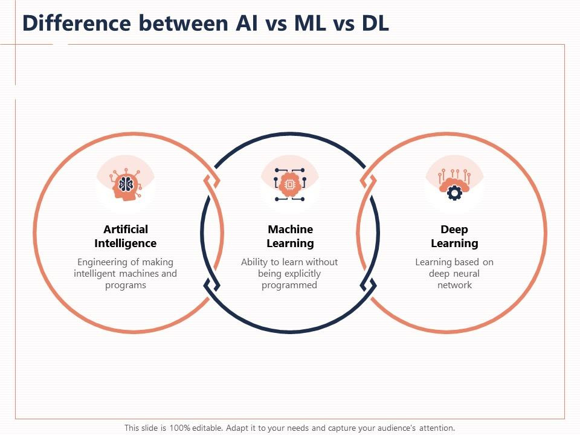

Chapter 4: Basics of AI
This chapter introduces the basics of AI, including its history, and future potential.
This chapter introduces the basics of AI, including its history, and future potential.

Understanding the distinctions between Artificial Intelligence (AI), Machine Learning (ML), and Deep Learning (DL) is crucial in grasping the breadth and complexity of these technologies.
Artificial Intelligence (AI) refers to machines that possess the ability to simulate human intelligence. Through AI, machines can replicate human cognitive processes, such as learning, reasoning, and problem-solving. AI has revolutionized various industries, from healthcare and finance to transportation and entertainment, by enabling automation, data-driven insights, and enhanced decision-making.
Machine Learning (ML) is a subset of AI that focuses on training machines to learn from experience or data. ML algorithms enable machines to improve their performance and make predictions or decisions based on patterns identified in training data. Through ML, machines can detect patterns, recognize objects, understand language, and even predict human behavior.
Deep Learning (DL) is a further subset of ML that centers around neural networks, which are algorithms inspired by the structure and functioning of the human brain. DL algorithms can automatically learn intricate patterns and hierarchies in data, making them especially effective in complex tasks such as image and speech recognition. In DL, data is fed into multiple layers of interconnected nodes, where each node processes a specific aspect of the data.
An AI model is a program or algorithm that leverages a vast amount of data to identify patterns and make predictions or decisions autonomously, without the need for human intervention. By utilizing advanced machine learning and deep learning techniques, AI models are designed to analyze complex datasets and extract valuable insights that can drive efficient and accurate decision-making processes.
Unlike traditional methods, which often rely on manual analysis and human judgment, AI models harness the power of intelligent algorithms to process and interpret data at a scale and speed that humans cannot achieve. This enables AI models to uncover intricate patterns and relationships within the data, leading to more accurate predictions and informed decision-making.
AI models can be built using various machine learning and deep learning techniques, depending on the nature of the problem they aim to solve. For instance, a machine learning model may use supervised learning, where it learns from labeled training data, or unsupervised learning, where it discovers patterns in unlabeled data. Deep learning models, on the other hand, utilize artificial neural networks to simulate human-like decision-making processes and achieve higher levels of performance.
These AI models excel in scenarios where large amounts of data need to be processed and interpreted to drive actionable insights. By automating the decision-making process, AI models streamline operations across various industries, including finance, healthcare, marketing, and more.
To further illustrate the concept of an AI model, let's consider an example in the field of healthcare. A deep learning model trained on extensive medical records and clinical data can analyze patient symptoms, historical treatment outcomes, and demographic information to predict the likelihood of a certain disease or condition in an individual. This predictive capability can assist healthcare professionals in making more accurate diagnoses and recommending tailored treatment plans.
In summary, AI models leverage sophisticated algorithms and vast quantities of data to make predictions and decisions autonomously. By utilizing machine learning and deep learning techniques, these models revolutionize decision-making processes, leading to increased efficiency and accuracy in a wide range of industries.
AI models are trained using a variety of techniques that enable them to learn from data and improve their performance. These techniques include supervised learning, unsupervised learning, semi-supervised learning, and image annotation. Each technique plays a crucial role in enhancing the capabilities of AI models.
In supervised learning, the AI model is trained using labeled data. The labeled data consists of input features and corresponding output labels or target values. The model learns from this labeled data to make predictions or classify new, unseen data accurately.
This technique is widely used in tasks like object recognition, sentiment analysis, and spam detection. By providing the model with labeled examples, it learns to associate specific patterns or features with their corresponding outputs, enabling it to make accurate predictions on new, unlabeled data.
Unsupervised learning involves training the AI model on unlabeled data. In this technique, the model learns to explore patterns and structures within the data without any explicit guidance or supervision.
This technique is useful when the data is unstructured and lacks labels or target values. Unsupervised learning algorithms can uncover hidden patterns, identify clusters, and detect anomalies in the data. It is commonly used for tasks like clustering, anomaly detection, and dimensionality reduction.
Semi-supervised learning combines elements of both supervised and unsupervised learning. It utilizes a small amount of labeled data along with a large amount of unlabeled data for training the AI model.
This technique leverages the benefits of both labeled and unlabeled data. The labeled data assists the model in learning specific patterns or concepts, while the unlabeled data helps in discovering additional patterns, generalizing knowledge, and improving overall performance.
In the field of computer vision, image annotation is a crucial step in training AI models. Image annotation involves labeling or tagging specific objects, regions, or features within an image.
By providing annotations such as bounding boxes, segmentation masks, or keypoints, AI models can learn to recognize and understand objects within images. Image annotation serves as ground truth data for supervised learning, helping the model associate visual patterns with specific labels or categories.